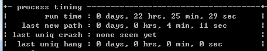
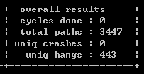
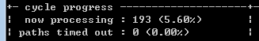
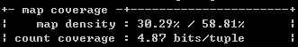
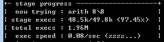
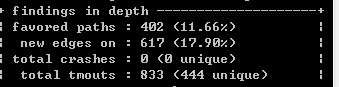
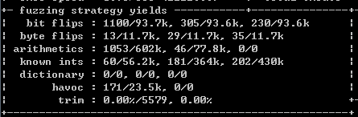
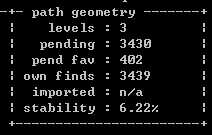

winAfl
条评论WinAFL
- 背景
从目标二进制文件中查找新的执行路径。 - WinAFL 的路径
使用DynamoRIO 来动态插桩，用来测量和提取目标覆盖率。 - 搭建，使用
http://www.4hou.com/technology/2800.html
status screen
- 处理时间 Process timing

- Run time：运行时间
- Last new path：最近一次的新的路径
- Last uniq crash：最近一次的崩溃样本出现时间
- Last uniq hang：最近一次出现样本被挂起的时间
- 处理时间 Process timing
- 总体结果 Overall results

- Cycles done：循环的次数
- Total path：测试的总路径
- Uniq crashes：崩溃数
- Uniq hangs：总的不同的有趣样本的数目
- 总体结果 Overall results
- 循环进度Cycle progress

- Now processing：当前的进度
- Path timed out：因超时而放弃的部分
- 循环进度Cycle progress
- 模块覆盖率 Map coverage

- Map desity：30.29%表示已击中多少部分，58.81%表示总体的覆盖率
- Count coverage：计算覆盖率
- 模块覆盖率 Map coverage
- 测试进展 Stage progress

- Now trying：当前测试到哪一步
- Stage execs：当前exec执行的进度
- Total execs：执行的文件数
Exec speed：执行的速度
Calibration： 预模糊阶段，检查执行路径以检测异常。
- trim L/S： 另一个预模糊阶段，把样本改为最短，已相同路径执行。
- bitflip L/S： 位翻转测试。
- arith L/8： 算术测试。
- interest L/8： 填入确定的值进行测试。
- Extras： 通过字典进行测试。
- Havoc： 带固定长度，且堆叠随机调整的测试。
- Splice： …
- Sync： …
- 测试进展 Stage progress
- 测试结果 Findings in depth

- favored path：特别的路径
- new edges on：新的边缘覆盖数量
- total crashes：崩溃数
- total tmouts：总的特别的样例
- 测试结果 Findings in depth
- 测试的算法

- 测试的算法
- 测试路径 Path geometry

- Levels：测试的路径深度
- Pending：有待测试的数量
- Pend fav：偏好的样例数目
- Own finds：在此测试中找到的新路径的数量
- Imported：相同输入有时在测试二进制文件中产生变量行为的程度
- Stability：程序对于相同的输入数据总是表现相同，这里就是100％。但是当这个数子很低时候，说明错在一些错误
- 测试路径 Path geometry